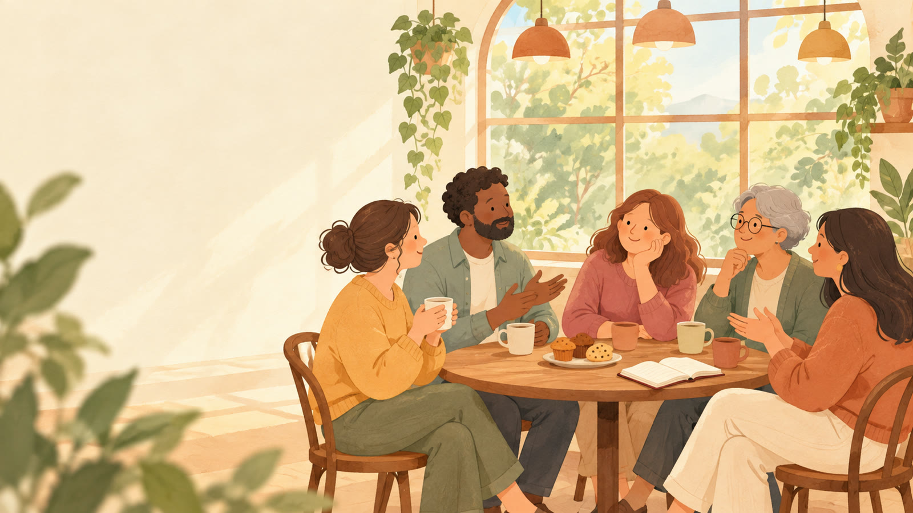
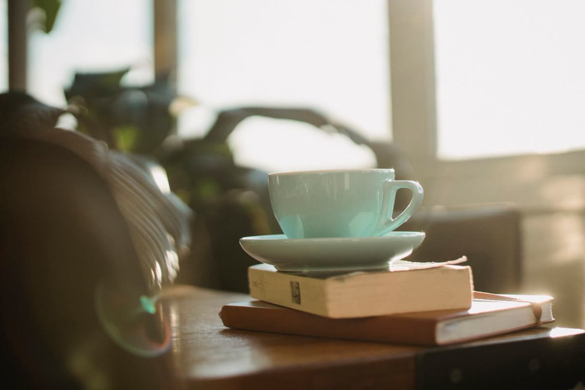
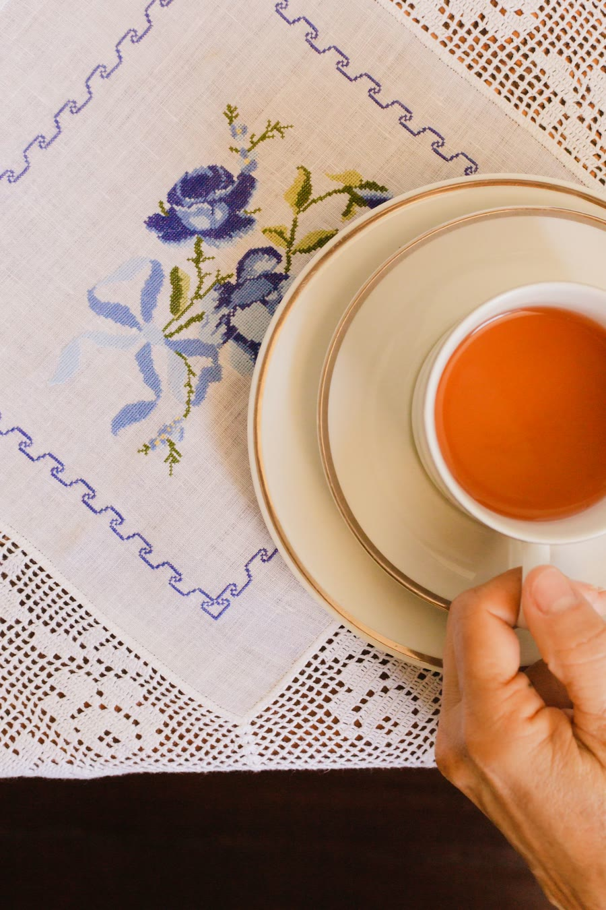

第2弾
発達っ子ママキャリアデザイン室 主催
発達特性の
子育て応援カフェ
〜子どもを真ん中に。
家族も、先生も、支援者も、
みんながみんなの応援団〜
少人数だからこそ話せる。当事者の声から、子どもの気持ちと関わり方を考える時間。

DATE11/15日14:00〜16:00
PLACEあやセンター ぐるぐる足立区綾瀬／綾瀬駅西口 徒歩約3分
MEMBERS5名どこからでも参加OK
FEE参加無料お子様連れOK


少人数だから、
ゆっくり話せる。第1回は大人5人で、1時間半たっぷり語り合いました。
当日の流れ
14:00〜
第1部 当事者が語る「私に見えていた世界」行動の裏にあるリアルな感覚や本質に、耳を傾ける時間に。
14:45〜
対話・質疑（臨床心理士も交えて）感じたことや日ごろの疑問を、少人数でじっくり共有します。
15:20〜
第2部 サポートブック活用ミニワークショップ家庭・学校・支援者で共有するツールを知り、作る第一歩に。
- 日時
- 2026年11月15日（日）14:00〜16:00
- 会場
- あやセンター ぐるぐる（東京都足立区綾瀬4丁目6−34）
- 対象
- 発達障がい、もしくは疑いのあるお子さんの保護者／関心のある方／学校・園・療育等の関係者（お住まいは問いません）
- 定員・費用
- 5名（先着順）／無料
- その他
- お子様連れ歓迎です。ただし保育等はありませんので、お子様とご一緒にご参加ください。
参加を申し込む
QRコードを読み取り、
フォームからお申し込みください。